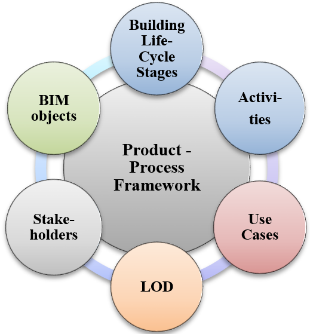
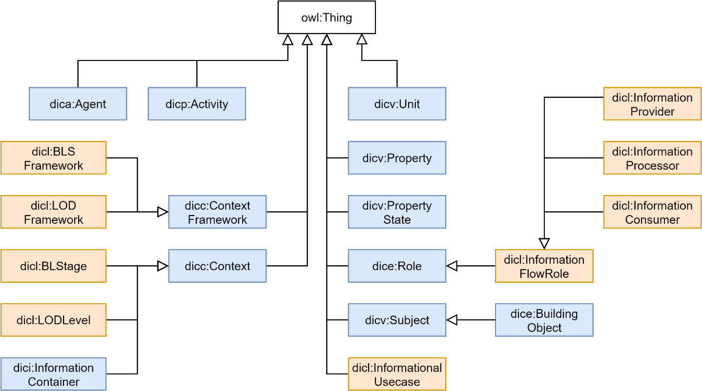
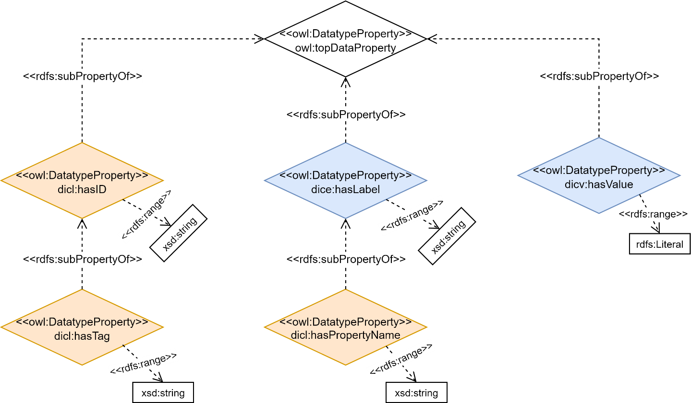
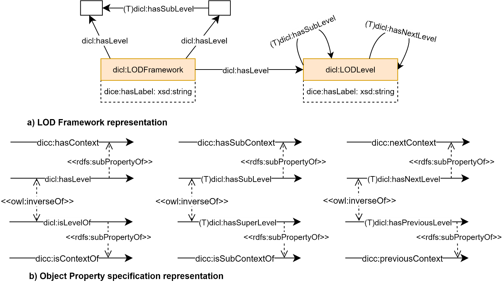
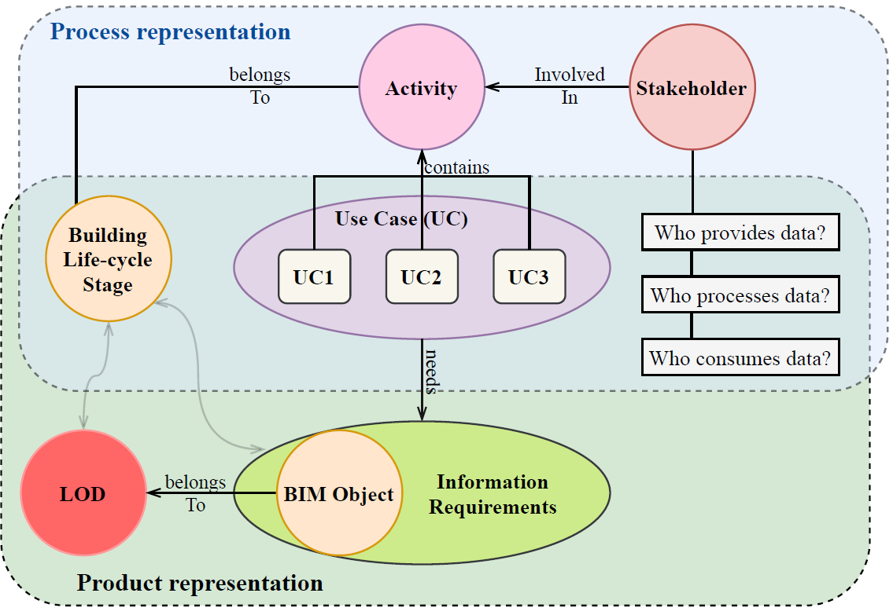
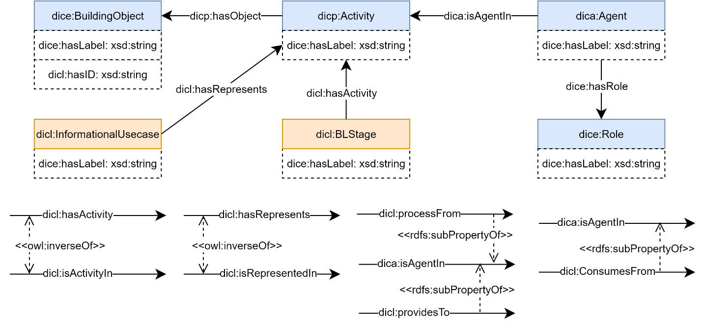
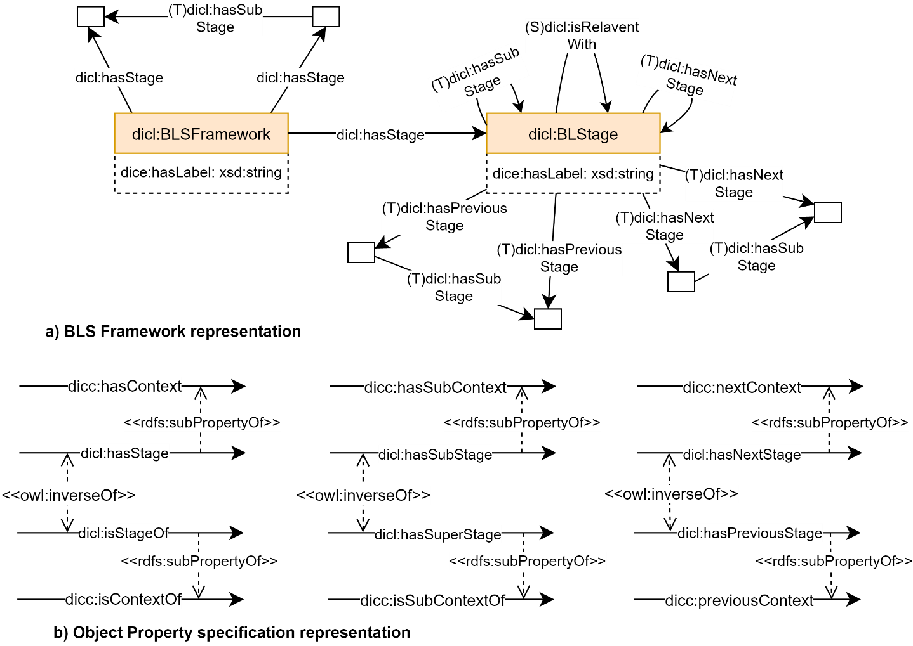

Description
Architecture, Engineering, Construction, Operation (AECO) and Facility Management (FM) industry is a collaborative environment with the involvement of multiple disciplines and activities throughout the building lifecycle process (Karlapudi et al. 2020). This collaboration requires the iterative and cooperated exchange of information, and improves the building design over multiple lifecycle stages (Abualdenien and Borrmann 2018; Abualdenien and Borrmann 2019). The successful representation of these information refinements at each BLS enables the identification of the required level of detail for data export or import parameters between the multiple disciplines.
Since the last decade, LOD is a promising approach for efficient representation of semantically rich BIM data in different levels of detail. The defined LOD levels from the different national standards or code of practices aim to describe the granularity and the sequential refinement of both the geometric and semantics information about an object (Hooper 2015). This methodological approach assists to track the improved changes or refinements of the building objects throughout the different phases of the building design.
Despite the improvement, there is a lack of successful implementation and management of LOD functionalities within the existing BIM solutions (Papadonikolaki et al. 2018). One main issue is the insufficient understanding of diverse frameworks for the adoption and representation of LOD levels. This research elaborates the extensive analysis of different LOD specifications to represent information granularity according to the standards. Based on the analyzed knowledge, further progress to provide a flexible Ontology-based LOD framework to define information levels according to different available standard and align with the use-case (IDM concept) requirements involved in the construction projects.

Figure 1. Components for consideration to define the Product-Process Modelling
Furthermore, In the context of the BIM4EEB project, BIM is an advanced information technology that should be adopted by relevant Stakeholders to perform efficient renovation of existing buildings. These stakeholders are performing their Activities with the use of the BIM model for managing the information produced during the renovation processes throughout Building Lifecycle Stages (BLS), in a common format and to enable the best and most efficient use of the information (Karlapudi et al. 2020). The inherited LOD concept is used to represent and/or filter these information refinements produced in different stages and as well to verify the compliance of generated information models. From the scope of the BIM4EEB project, this article elaborates the developed ontology for representing the product modelling support of different LOD levels and their integration to BIM4EEB workflow ontologies. By summarising the abovementioned scope, this research is considered six components/domains which are represented in Figure 1 for the definition of the “Digital Construction Lifecycle (DICL)” ontology.
The layout represented in Figure 1 is defining a 6-dimensional space where all of those components are related to each other. In the BIM4EEB project, there is the exact number of identified stakeholders, who are acting in activities of renovation processes. Stakeholders dealing with BIM-related data represented with specific LOD in different BLS. Activities, LOD and BIM entities are related to these Stages. Moreover, a concept is developed to simplify the understanding and to merge stakeholders’ activities into the 3 larger sets – called Use Cases.
Overview
The overview of the developed ontology is presented in two parts. The first part of the research work completely focused on the LOD structures from various standards or publications, which substantially supports tracking and record the granularity of the objects. In the second part, the research concentrated on the LOD based BIM data management in workflow ontologies. The final development goal is a “Digital Construction Lifecycle (DICL)” or “Lifecycle” ontology which describes clearly activities, tasks, and sequences, their interrelation to stakeholders involved and the required information, etc.
Figure 2. Lifecycle Ontology – Class Taxonomy
Within this article, the Ontology Visual Notations from (Garijo and Poveda-Villalón 2020) are adopted to represent the Lifecycle ontology. Figure 2 and Figure 3 comprehensively illustrating the taxonomy of ontology structure corresponding to Classes and Data properties respectively. Later in the development phase, the representation is elaborated regarding the relations between the classes using object properties. In the development process of lifecycle ontology, the classes from the other BIM4EEB workflow ontologies are also used. The ideology is to reduce the redundancy and repetition of ontology concepts within the BIM4EEB onology suite.
Figure 3. Lifecycle Ontology – Data Property Taxonomy
An analysis of various LOD systems according to the standard of practices or national norms is carried out as a part of the initial study. Based on the results from this analysis a conclusion is drawn on flexible usage of these frameworks into the construction project irrespective of standards and the region of work. It also identified the basic requirement that needs to be addressed in the ontology representation of the LOD framework. The analysis of various LOD systems further leads to different implementation requirements which need to be defined by the ontology-based frameworks. The concept called Competency Questions (CQ) is used to list out these requirements in terms of natural language questions. These CQs are used as bases for the development of ontology structure, concepts and properties.
The development of an ontology framework for LOD representation is progressed towards providing all the answers for these requirements (CQ’s). From the general analysis of different LOD systems, a methodological ontology schema is developed and illustrated in Figure 4. Since different renovation projects can adopt different LOD systems, the developed ontological structure of the LOD framework can accommodate the different standard of representations. The methodological idea is to represent LOD systems and their levels scale as classes, which can then be instantiated on a project-to-project basis. The class dicl:LODFramework can be instantiated with the frameworks called USA BIMForum, UK LOD, Italian LOD, etc. Similarly, the levels in different frameworks are added as instances to the class dicl:LODLevel. Later on, the link between the framework and its respective levels are generated using the object property dicl:hasLevel and its inverse property dicl:isLevelOf.
Furthermore, relationships between the levels of a framework are indicated using the transitive object properties dicl:hasNextLevel, dicl:hasSubLevel and their inverse properties dicl:hasPreviousLevel, dicl:hasSuperLevel respectively. A property characteristic called owl:TransitiveProperty is defined for these properties in order to represent the aggregation relationship between levels. Similarly, a sub-property chain axiom (dicl:hasLevel o dicl:hasSubLevel → dicl:hasLevel) is assigned to the object properties dicl:hasLevel to define semantic interpretation between the levels and LOD subtypes.

Figure 4. Ontology-based LOD framework
Furthermore, the research is extended with an ideology, how and can the paradigm of lifecycle data management introduce in the Architecture, Engineering, Construction and Operation (AECO) industry. From the analysis of LOD requirements corresponding to the BIM data management, a representational schema for ontology development is generated and illustrated in Figure 5. The development goal of integrated lifecycle ontology is to clearly describe the different activities, tasks, and sequences, their interrelations to stakeholders involved, the required information, other resources, etc. The developed methodological schema results in the 6-dimensional intercommunication framework including Activity, Stakeholder, BLS, LOD, BIM data and Use case. This schema also expresses the relationship between these six aspects of the building renovation process.

Figure 5. A representational schema for ontology development
Figure 6 and 7 are comprehensively illustrating the developed ontology structure based on the methodological schema represented in Figure 5. For this ontology definition, a set of pre-defined classes from the BIM4EEB ontologies are considered.

Figure 6. Building Product Data management
In Figure 6, the class dice:BuildingObject is used to represent the building objects. This class is related to the class dicv:Subject by an equivalent property. The defined classes dicv:Property and dicv:PropertyState makes it possible to add an ultimate number of properties to building objects and their growth of accuracy throughout the project life-cycle. In detail, the object property is indicated by the class dicv:Property and the growth of the value of this property is comprehensively indicated in different property states using the class dicv:PropertyState. The relationship between these classes is represented by object property dicv:hasPropertyState. Additionally, these classes support defining meta-data attributes for each property (e.g. role or quantity kind, unit, value) and each property state (e.g. source, timestamp, value, unit, etc.). This property definition capabilities are attached to the object using the object property dich:hasProperty and its inverse property dicv:isPropertyOf. This specification of Objectification of the properties also supports the modelling relationship between LOD and BIM attributes by using the object property dicl:hasLODLevel and its respective inverse property dicl:isLODLevelOf. This relationship making it possible to represent the property value at its corresponding LOD level.
Additionally, the ontology structure also provides the capability to indicate the source for each growth of information (property values) and their LOD levels. This has been achieved by developing a relationship between the dici:InformationContainers (documents, models, files, etc.) and dicv:PropertyState. This relationship is developed using the object property called dicl:isDerivedFrom. Another important criterion is to develop a relationship between the LOD-based BIM data and the activities that required this data to perform a certain action. This relationship is indicated by using the object property dicp:hasObject and its inverse property dicp:isObjectIn. The same relation is represented in Figure 7 and explains the information regarding the required object data for each activity. Which furtherly inherits the required level of data for each activity within the building lifecycle stages of the building.

Figure 7. Building Process Data management
The class dica:Agent in Figure 7 specifies all actors/stakeholders involved in the building renovation process. Figure 7 also representing the role of different stakeholders involved in the renovation interventions or activities. The stakeholder roles are categorized dependent on data development, process and consumption activities. A class dicl:informationalRole is defined as subclass to dice:Role to substantially accommodate different roles, such are dicl:InformationConsumer, dicl: InformationProcessor, dicl: InformationProvider (represented in Figure 2). The specific Role of an agent assigned to him through the object property dice:hasRole and its inverse property dice:isRoleOf. Similarly, a simple relationship is defined between activity and the agent by using the object property dica:hasAgent and its respective inverse property dica:isAgentIn. Furthermore, the object property dica:isAgentIn is categorized into three sub-properties dicl:consumesFrom, dicl:providesTo and dicl:processFrom, which are used based on the role of the agent.
Furthermore, in the lifecycle ontology, a Use-case representation is used as a grouping mechanism to represent the set activities involved in a specific process. That means a use-case indicates different activities in different BLS and their required data to complete a specific process in a building renovation scenario. Concerning the lifecycle ontology development, it is also an important parameter to represent this grouping mechanism within the ontology representation. A class dicl:InformationalUsecase is considered and provided a relationship with dice:Activity by using object property called dicl:hasRepresents and its inverse property dicl:isRepresentedIn
In common practice, the activities are listed according to the BLS of the project. In WP2 Deliverable D2.1, an extensive analysis is carried in on this list of involved activities for building renovation in each Building lifecycle stage. These analysis results are considered for the further development of ontology representation. This relationship between the BLS and the Activities in Lifecycle ontology framework is represented with the help of object property called dicl:hasActivity and its inverse property dicl:isActivityIn. The same relationship is comprehensively illustrated in Figure 7.

Figure 8. BLS ontology framework
Additionally, an intense analysis is carried on the BLS framework according to the different standards of specifications for categorization of the building renovation process. The specification of BL stages is necessary for each construction project to manage and assess engineering services. However, the standard stages in the project differ from country to country and may also be subjected to differences in legislation.
So the ontology structure is further extended to BLS representations according to different standards, publications, user-defined or project-based specifications. The adopted methodology is similar to the LOD framework ontology in terms of assigning the stages as a class (dicl:BLStage). It provides the relationship between the stages using the object properties called dicl:hasSubStage, dicl:hasNextStage and their respective inverse properties dicl:hasSuperStage, dicl:hasPreviousStage. Similarly, the transitive character of the properties is enabled by assigning owl:TransitiveProperty to these object property which further enables the aggregated relationships between the stages.
In addition to the property characteristics, some axioms are defined to achieve the complete semantic meaning of BLS stages into an ontological framework. These defined axioms are clearly illustrated in Figure 13. In an example scenario of BS EN 16310 framework, each stage is comprised of many sub-stages and technically these sub-stages are also stages to that framework. This semantic meaning is inferred in ontology with the help of the subProperty chain axiom (dicl:hasStage o dicl:hasSubStage → dicl:hasStage) defined to the object property dicl:hasStage. Similarly, in the same scenario, the main stage inst:Design (refer Table 7) have a next stage relation with the substage called inst:Maintenance (refer Table 7) or vice versa. These complex relations are modelled in the ontology by using axioms dicl:hasNextStage o dicl:hasSubStage → dicl:hasNextStage, dicl:hasPreviousStage o dicl:hasSubStage → dicl:hasPreviousStage assigned to properties dicl:hasNextStage, dicl:hasPreviousStage respectively. Furthermore, the mapping relationships between the stages from different frameworks are modelled by using the symmetric object property dicl:isRelaventWith.
Publication bibliography
Abualdenien, Jimmy; Borrmann, André (2019): A meta-model approach for formal specification and consistent management of multi-LOD building models. In Advanced Engineering Informatics 40, pp. 135–153. DOI: 10.1016/j.aei.2019.04.003.
Hooper, Martin (2015): Automated model progression scheduling using level of development. In Construction Innovation 15 (4), pp. 428–448. DOI: 10.1108/CI-09-2014-0048.